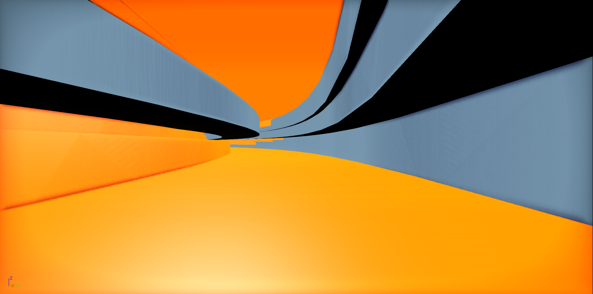
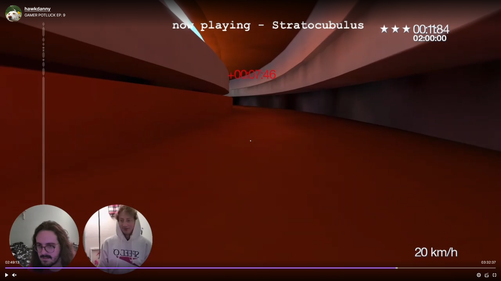

Recently, I released Hatocubulus, my attempt at porting over a really cool mod from 2013 for Mirror's Edge into one of my favorite games, A Hat in Time. It was a really fun and fairly easy project to take on, and I'm ultimately happy with how it turned out.
Getting the model into the Hat in Time modding tools took a few steps but was overall not very complicated. I was able to use this tool pull the models and materials from from the stratocubulus mod download folder, then I could import the resulting psk files into blender with this add-on. After that I just needed to ensure that a "Per-Poly Collision" flag was set within Unreal so that the player could stand on the imported meshes.
From this point the perhaps biggest hurdle I had to overcome was that one of the meshes, when imported, didn't line up correctly with the others. It's unclear as to why this was the case, but it took some manner of trial and error and comparing screenshots from the spawn point to see if I had lined it up "close enough".
 After the map appeared close enough to being lined up, the next step was ensuring I had the checkpoints in the right place. I manged this simply by watching speedruns of the original mod and following their paths along in-editor. Dropping a checkpoint marker (which eventually became time piece shards) wherever they met a checkpoint in the run. It was tedious, but it did the job.
Perhaps the biggest deviation I took from the original mod, however, was to use the aforementioned time piece shards in place of sequential checkpoints. I wanted to give the player a bit more freedom in their pathing, and time piece shards could be collected in any order. I thought that, if any kind of speedrunning community formed around this map, it would encourage runners to find more optimal paths to completion.
As of now, the mod sits at relatively low reviews - at the time of writing, it's split 50/50 between positive and negative. There are some issues I had with the mod myself, but I hesitated to change much more than I already did, in order to keep the spirit of the original. Going forward though, I'm curious to explore some basic generative modeling in blender and making more levels like this one.
Anyway...